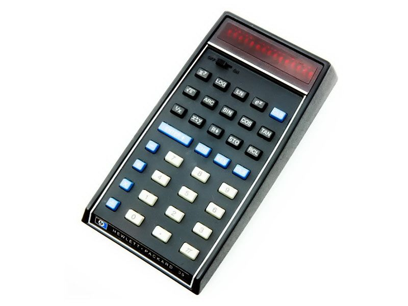
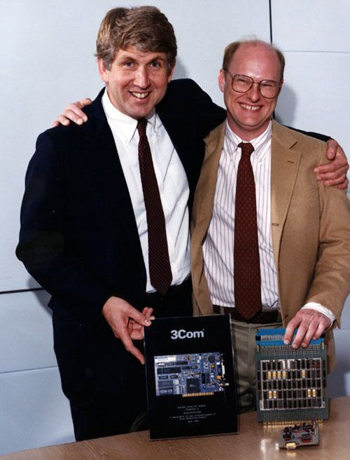
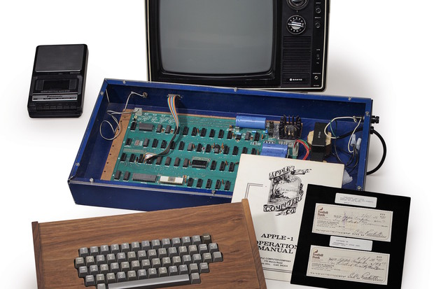
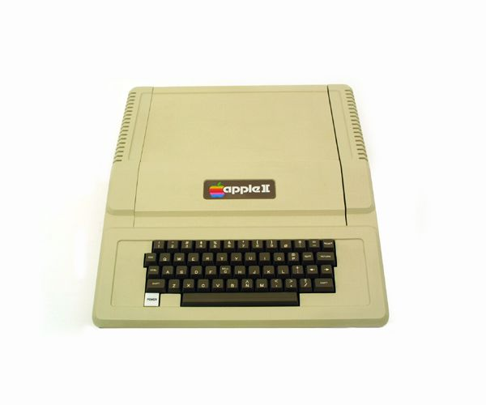
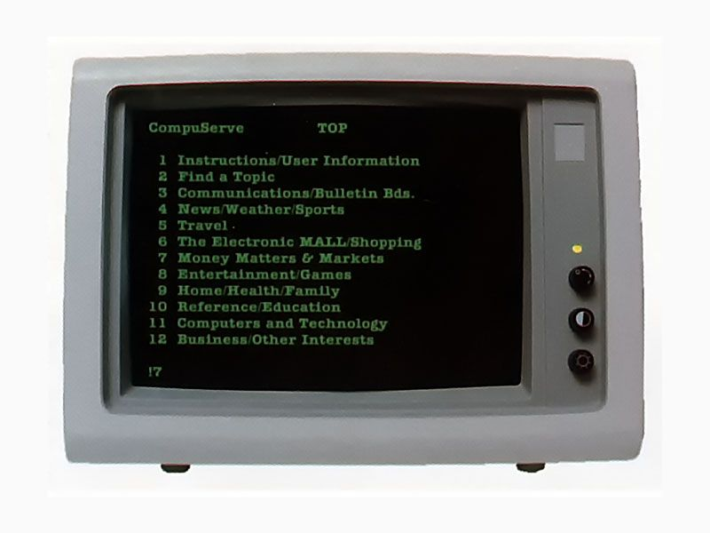

 Initially designed for internal use by HP employees, co-founder Bill Hewlett issues a challenge to his engineers in 1971: fit all of the features of their desktop scientific calculator into a package small enough for his shirt pocket. They did. Marketed as “a fast, extremely accurate electronic slide rule” with a solid-state memory similar to that of a computer, the HP-35 distinguished itself from its competitors by its ability to perform a broad variety of logarithmic and trigonometric functions, to store more intermediate solutions for later use, and to accept and display entries in a form similar to standard scientific notation. The HP-35 helped HP become one of the most dominant companies in the handheld calculator market for more than two decades.
 Computers have to communicate down the hall, as well as globally. Local area networks (LANs) evolved from the early links to peripheral devices such as terminals and printers. 1973 marks the birth of the standard that will eventually prevail: Ethernet. Created as part of Xerox PARC’s sweeping vision of an “office of the future” comprised of connected PCs, Ethernet adapts techniques from the wireless ALOHAnet to treat cables as a passive medium, like the air (“ether”) between radio stations. But it will have stiff competition from various local network standards including IBM’s formidable Token Ring and Datapoint’s ARCNET.
 Designed by Sunnyvale, California native Steve Wozniak, and marketed by his friend Steve Jobs, the Apple-1 is a single-board computer for hobbyists. With an order for 50 assembled systems from Mountain View, California computer store The Byte Shop in hand, the pair started a new company, naming it Apple Computer, Inc. In all, about 200 of the boards were sold before Apple announced the follow-on Apple II a year later as a ready-to-use computer for consumers, a model which sold in the millions for nearly two decades.
 Sold complete with a main logic board, switching power supply, keyboard, case, manual, game paddles, and cassette tape containing the game Breakout, the Apple-II finds popularity far beyond the hobbyist community which made up Apple’s user community until then. When connected to a color television set, the Apple II produced brilliant color graphics for the time. Millions of Apple IIs were sold between 1977 and 1993, making it one of the longest-lived lines of personal computers. Apple gave away thousands of Apple IIs to school, giving a new generation their first access to personal computers.
 Personal computers have started to slowly take off in North America by the end of the 1970s, a decade earlier than most other parts of the world. Connecting them to remote servers can be a nightmare of endless settings and false starts, accompanied by the squawks and squeals of an expensive, finicky modem. Most computer owners don't bother, but by 1979 a subset of brave or stubborn ones are subscribing to early online services like MicroNet (later CompuServe Information Service) and The Source, or connecting to Bulletin Board Services (BBSs) hosted on somebody else’s minicomputer or PC. By 1990 more than two million North Americans will be online for discussion groups, shopping, news, chat, e-mail, and more; the early online services have been joined by AOL, Prodigy, and others. This dial-up world pioneers much of what we do on the Web, though in a more communal setting.